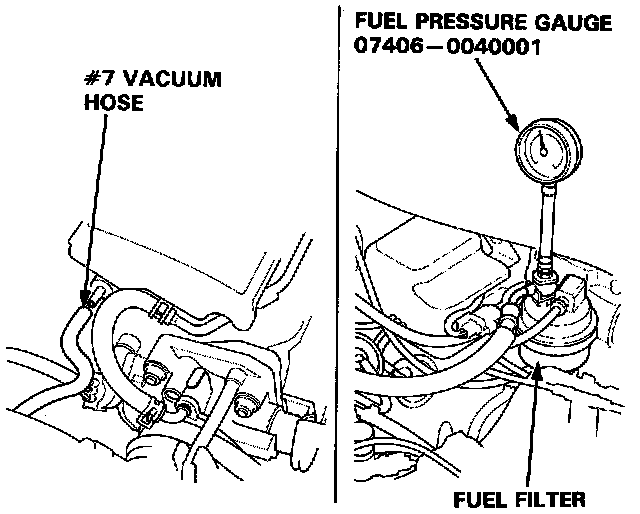
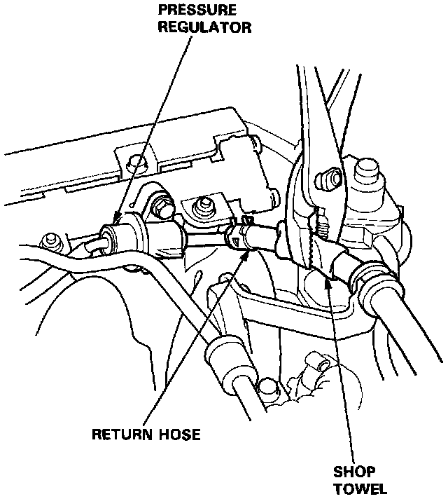

Fuel Pressure Regulator: Testing and Inspection
Pressure Regulator TestingWARNING: Do not smoke during the test. Keep open flames away from your work area.

1. Attach a pressure gauge to the service port of the fuel filter.
Pressure should be:
300 - 350 kPa (3.0 - 3.5 kg/cm2, 43 - 50 psi)
(with the regulator vacuum hose disconnected)
2. Reconnect the #7 vacuum hose to the intake manifold.

3. Check that the fuel pressure rises when the vacuum hose from the regulator is disconnected again.
- If the fuel pressure did not rise, check to see if it rises with the fuel return hose lightly pinched.
- If the fuel pressure still does not rise, replace the pressure regulator.